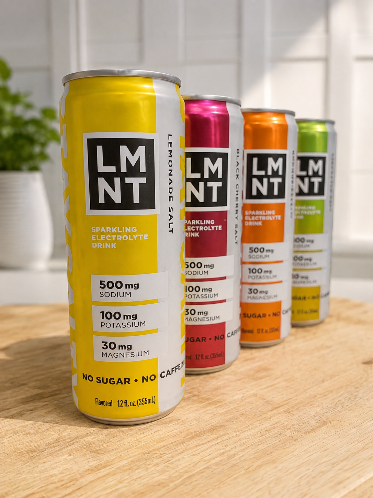

LMNT has been all over run club conversations for a while now, so I finally grabbed a variety pack to see what the hype was about. Their pitch is straightforward: a zero-sugar electrolyte drink formulated for paleo and keto lifestyles, with no artificial ingredients, built to address electrolyte imbalances and support sodium intake for energy, sleep, and cognitive function. They sell both drink mix packets you stir into a water bottle and ready-to-drink cans. I went with the cans.
What's in the Can
Every flavor carries the same electrolyte profile: 500mg sodium, 100mg potassium, and 30mg magnesium per 12oz can, with no sugar and no caffeine. The variety pack I picked up had four flavors: Lemonade Salt, Black Cherry Salt, Orange Salt, and Pineapple Salt, each one a sparkling water base with salt, citric acid, magnesium malate, potassium chloride, and a natural flavor. No sugar means no calories either, so this isn't fuel in the carbohydrate sense. It's strictly electrolyte replacement.

First Impression: These Taste Too Good
I wanted the variety pack specifically to figure out which flavor I liked best. Spoiler: I liked them all. Lemonade Salt is the most crowd-pleasing of the four, Black Cherry Salt is the one I'd hand to someone who wants a "treat" over a "drink," and Orange and Pineapple Salt both land somewhere in between, bright, a little tart, and easy to drink fast.
The reason how good these taste actually gave me pause is because of what the drink is designed for. LMNT is a high-sodium electrolyte drink built to replace what you lose through sweat, not something meant to be sipped casually with every meal. 500mg of sodium in one can is a real number, and it's easy to knock back a can because it tastes like a light soda rather than something clinical. So I've kept myself to drinking one only after a long or demanding run, not as a regular beverage.
When It Actually Makes Sense
Sodium is the primary electrolyte lost in sweat, so LMNT earns its keep during hot-weather running, long runs, hard workouts, or anytime you're sweating substantially. That's the window I use it in. It's worth being clear about what it isn't: this is not an energy drink. It doesn't supply carbohydrate fuel, and the sparkling version is caffeine-free, so don't expect a jolt. Think hydration and electrolyte replacement, not energy or calories.
A Quick Caveat
I'd be wary of treating one of these as a daily habit at every meal, but I'm not a medical professional and this isn't medical advice, just how I've chosen to use it based on what's actually in the can.
Bottom Line
LMNT delivers exactly what it promises: a real dose of sodium, potassium, and magnesium with zero sugar and no artificial aftertaste, in flavors that genuinely taste good rather than just "drinkable." I'm keeping the variety pack in the fridge for post-long-run recovery and hot-weather runs, and I'd recommend it to anyone who's felt that heavy, salt-depleted crash after a sweaty session. Just save it for when you've actually earned it.